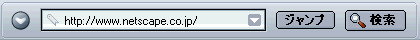
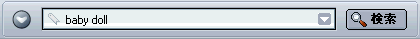
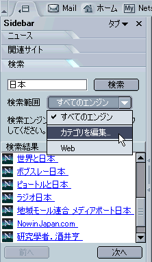

|
|||
| 戻る 進む | |||
Netscape へようこそ！ 数ある Netscape の機能の中でも、Web ブラウズは最も利用されている機能の 1 つです。 Web ページにアクセスするための Netscape コンポーネントである Navigator を使用すると、さまざまな方法で Web ページにアクセスしたり、Web を検索することができます。
このセクションでは、Navigator の機能を紹介するとともに、Web ページのブラウズ、検索、および保存方法について説明します。
|
このセクションの内容： |
|
このセクションの内容： |
Netscape を起動すると、ブラウザである Navigator が表示されます。 Netscape を初めて起動する場合は、ブラウザ ウィンドウに「新機能」ページが自動的に表示されます。
2 回目以降は、Netscape を起動すると、ホーム ページが表示されます。 ユーザが特定のホーム ページを設定していない場合は、ネットワークまたはインターネット サービス プロバイダによって指定されたホーム ページ、または Netscape のホーム ページが表示されます。
ホーム ページを選択する方法については、「Netscape の起動方法を指定する」を参照してください
ヒント：
[ このセクションの最初に戻る ]
別のページに移動するには、その URL を入力します。URL とは Web 上におけるページの場所（アドレス）のことです。 URL は通常、「http://」で始まり、その後にアドレスを識別するための 1 つ以上の名前が続きます（例：http://netscape.com）。
ウィンドウの右下にあるロック アイコンを使用すれば、いつでも Web ページのセキュリティ状態を確認できます。 詳しくは、「Web ページのセキュリティを確認する」を参照してください。
ヒント： 場所ツールバー内の URL をすばやく選択するには、Ctrl+L キーを押します。
|  |
| 場所ツールバー
|
URL が分からない場合は、、「cnn（www.cnn.com の場合）」のように URL の一部、または「gift」や「flowers」のような一般的な単語を入力します。Navigator によって推測されたページか、または入力した単語に関連するリンクのリストが表示されます。
インターネットに慣れていない方は、「New to the Net Tutorial（はじめてのネット チュートリアル）」を参照してください。
[ このセクションの最初に戻る ]
多くの Web ページには、他のページに移動するためのリンクが含まれています。
[ このセクションの最初に戻る ]
以前アクセスしたページに戻るには、次のような方法があります。
| |
|||
| 戻る 進む | |||
| 場所ツールバー |
ヒント： Sidebar の［履歴］タブを使って、過去のセッションでアクセスしたページを選択することもできます。 詳しくは、「Sidebar タブを追加する」を参照してください。
履歴リストには、最近アクセスしたページへのリンクが含まれています。 場所ツールバーのリストには、場所ツールバーに入力してアクセスしたページへのリンクが含まれています。
Navigator から履歴リストにアクセスするには、［ジャンプ］メニューから［履歴］を選択します。 場所ツールバーのリストにアクセスするには、場所ツールバーの右側にある矢印をクリックします。
ヒント： 履歴リストをすばやく開くには、Ctrl+H キーを押します。
今までにアクセスしたページを場所ツールバーや履歴リストに表示する必要がない場合は、履歴リストと場所ツールバーの履歴の一部またはすべてをクリアすることができます。
場所ツールバーや履歴リストからすべてのページを削除するには、［Navigator］ ウィンドウを開いてから、以下の手順で操作します。
履歴リストで選択したページを削除するには、以下のいずれかの操作を行います。
ヒント： 履歴リスト内の項目を並べ替えるには、カテゴリ（タイトル、場所、最終アクセス日時）のいずれかをクリックします。 もう一度タイトルをクリックすると順序が逆になります。
[ このセクションの最初に戻る ]
ページの表示に時間がかかる場合、またはそのページを表示しない場合には、［中止］ボタンをクリックします。
現在表示しているページを更新したり、最新の内容を表示するには、［再読み込み］ボタンをクリックするか、Ctrl+Shift+R キーを押します（Mac OS の場合は、Cmd+Shift+R キー）。
|
|
|||
|
再読み込み
|
停止
|
||
[ このセクションの最初に戻る ]
Web ページの URL アドレスはかなり長い場合があり、それらを記憶するのは大変です。ただし、Web をブラウズするのに URL を覚える必要はありません。ブラウザには Web ページのアドレスを記憶したブックマーク リストがあるからです。
ブックマークの付いたページへジャンプするには、［Navigator］ウィンドウを開いてから、以下の手順で操作します。
ヒント：履歴をたどるには、［戻る］矢印をクリックします。
頻繁にアクセスするページや、興味のある Web ページにはブックマークを付けることができます。 詳しくは、「新しいブックマークを作成する」を参照してください。
[ このセクションの最初に戻る ]
一度に複数の Web ページにアクセスする際には、タブ式ブラウジングを使うと、すばやく簡単に Web をナビゲートできます。
タブ式ブラウジングを使用すると、1 つの［Navigator］ウィンドウ内に複数の異なる Web ページを表示できます。複数の Web ページにアクセスしても複数のウィンドウが表示されないため、画面がすっきりします。 別のウィンドウに切り替えなくても、1 つのウィンドウの中で Web ページを開いたり、閉じたり、再読み込みすることができます。
ナビゲーション タブは簡単に管理することができ、自動的にタブを開くタイミングも制御できます。 Netscape のタブ式ブラウジングの設定について詳しくは、「Navigator の設定 - タブ式ブラウジング」を参照してください。
タブ式ブラウジングの使い方については、「タブ式ブラウジング」を参照してください。
[ このセクションの最初に戻る ]
Navigator では Web をナビゲートできるほか、Sidebar を使って Web から自動的に情報を取得することもできます。
Sidebar はブラウザ内にあるフレームで、カスタマイズすることが可能です。ここには、最新のニュースや天気、アドレス帳、友だちリスト、株式相場、カレンダーなど、頻繁に使用する項目を配置できます。この他にも選択可能なオプションがたくさんあります。Sidebar のタブでは、これらの項目が自動的に最新情報に更新されます。
Netscape には、予めいくつかの Sidebar タブが設定されていますが、タブを追加、削除、または並べ替えて、ニーズに合わせて Sidebar を設定できます。 詳しくは、「Sidebar」を参照してください。
Sidebar タブの内容を表示するには、目的のタブをクリックします。

|
Sidebar のハンドル |
Sidebar が表示されていない場合は、ハンドルをクリックして開きます。 ハンドルが表示されていない場合は、Navigator の［表示］メニューの［表示／非表示］から［Sidebar］を選択します。 |
[ このセクションの最初に戻る ]
|
このセクションの内容： |
効率良く検索するには、場所ツールバー、Sidebar、またはネット検索ページを使用します。
特定のトピックについて Web を検索するには、下の図のように、ブラウザの場所ツールバーに質問や 1 つか 2 つの単語を入力します。

たとえば、ベビー人形についての情報を検索するには、次の手順で操作します。
検索を実行すると、その結果は次に新規検索を行うまで Sidebar の［検索］タブに保存されます。検索結果を表示するために［戻る］ボタンをクリックする必要はありません。
注記： インターネット キーワードを使用して、場所ツールバーから検索することもできます。
Sidebar の［検索］タブを使用すると、効率良く検索を行い、その結果にブックマークを付けることができます。たとえば、おもちゃの車についての情報を検索するには、次の手順で操作します。
注記： Sidebar の［検索］タブに複数の検索エンジンがある場合は、［詳細］モードに設定すると、複数の検索エンジンを使用して検索できます。 そのまま［詳細］に設定した状態にしておくことも、［インターネット検索］設定パネルで［ベーシック］に変更することも可能です。
ヒント： 検索結果の次のページや前のページをすばやく表示するには、Sidebar の［検索］タブにある［次へ］、［前へ］ボタンをクリックします。
ネット検索ページでは、［検索用語］や［検索句］にテキストを入力したり、興味のあるカテゴリ（教養&娯楽、ビジネスなど）を検索したりできます。ネット検索ページにアクセスするには、次のいずれかの操作を行います。
Web ページ内でユーザが選択した語句を検索するには、以下の手順で操作します。
新しいウィンドウに標準の検索エンジンを使用した検索結果が表示されます。 選択した語句の検索に使用する検索エンジンを変更する方法については、「Navigator の設定 - インターネット検索」を参照してください。
[ このセクションの最初に戻る ]
Sidebar の［検索］タブを詳細検索モードに設定すると、検索範囲を絞り込んだり、1 つ以上の検索エンジンを選択することができます。

検索カテゴリごとに、使用する検索エンジンを指定できます。たとえば、旅行について検索するための検索エンジンのセットと、ソフトウェアについて検索するための検索エンジンのセットを別に選択できます。
[ このセクションの最初に戻る ]
標準設定では、［検索］をクリックすると、Netscape サーチ という検索エンジンが使用されますが、別の検索エンジンを標準の検索エンジンに設定することもできます。また、Sidebar への検索結果の表示方法も指定できます。
[ このセクションの最初に戻る ]
場所ツールバーでインターネット キーワード を使用すると、特定の種類の情報を効率良く検索できます。インターネット キーワード を使用するには、以下の方法があります。
ヒント： 最もよく使われるインターネット キーワードは、場所ツールバーの左にあるプルダウン リストに一覧表示されています。三角形をクリックし、リストからキーワードを選択します。より詳しいキーワード リストを表示するには、［キーワードの一覧］を選択します。
重要：インターネット キーワードを使用する場合は、［検索］ボタンをクリックするのではなく、キーボードの Enter（Mac では Return）キーを押す必要があります。Enter キーを押すことによって、インターネット キーワード機能がアクティブになります。 一方、［検索］をクリックすると、検索が開始されます。
これら 2 つの機能の違いを確認するには、以下の手順を実行してください。
場所ツールバーへインターネット キーワードを入力してもうまく機能しない場合は、［スマート ブラウジング］設定で、インターネット キーワード機能が有効になっているかどうかを確認してください。
Navigator で現在表示しているページ内のテキストを検索するには、以下の手順で操作します。
再度同じ単語または語句を検索するには：
[ このセクションの最初に戻る ]
ブックマーク リストを検索するには、Navigator ウィンドウを開いてから、以下の手順で操作します。
ヒント： ［ブックマーク］メニューをすばやく開くには、Ctrl+B キーを押します。
履歴リストを検索するには：
検索結果を使用するには：
ヒント：
[ このセクションの最初に戻る ]
|
このセクションの内容： |
ページのテキストをコピーするには、Navigator ウィンドウを開いてから、以下の手順で操作します。
このテキストは、他のプログラム内に貼り付けることができます。
ページからリンク（URL）または画像リンクをコピーするには、以下の手順で操作します。
このリンクは、他のプログラムや Navigator の場所ツールバーに貼り付けることができます。
[ このセクションの最初に戻る ]
ページ全体を保存するには、Navigator ウィンドウを開いてから、以下の手順で操作します。
フレームを含むページを表示しているときに、そのフレームが選択されている場合は、ドロップダウン リストに［ページに名前を付けて保存］のほか、［フレームに名前を付けて保存］も表示されます。このオプションを使用すると、選択したフレーム内のページのみを保存できます。
ハード ディスクにファイルを保存すると、インターネットに接続していなくても、そのページ（または HTML コード）を表示できます。
ページ内の画像を保存するには、以下の手順で操作します。
ページを表示せずに保存するには（データ ファイルのような、表示を目的としない未フォーマットのファイルに便利）、以下の手順で操作します。
重要：リンクによっては、それをクリックするとファイルが自動的にダウンロードされ、ハード ディスク保存されるものがあります。これらのリンクの URL は、多くの場合「ftp」で始まるか、「au」や「mpeg」などのファイル拡張子で終わります。これらのリンクでは、ソフトウェア、サウンド ファイル、ムービー ファイルなどが転送され、ファイルをサポートするサポート アプリケーションが起動します。
ヒント： 画像を Windows のデスクトップの壁紙として設定するには、画像を右クリックしてポップアップ メニューから［壁紙として設定］を選択します。
[ このセクションの最初に戻る ]
現在のページを印刷するには、Navigator ウィンドウを開いてから、以下の手順で操作します。
選択したテキストを印刷するには、Navigator ウィンドウを開いてから、以下の手順で操作します。
画面上のウィンドウのサイズではなく、印刷するページのサイズによって、用紙内にどのようにコンテンツが配置されるかが決まります。テキストは折り返され、画像の位置は用紙サイズに合わせて変更されます。
印刷プレビュー機能を使用すると、印刷する前にページがどのように表示されるかを確認することができます。 Navigator ウィンドウを開いてから、以下の手順で操作します。
Navigator の［ファイル］メニューから［印刷プレビュー］を選択します。
印刷プレビュー画面では、印刷するページに対して以下の操作が可能です。
 、［前へ］
、［前へ］  、［最初］
、［最初］  、または［最後］
、または［最後］  ボタンをクリックして、ページを移動できます。
ボタンをクリックして、ページを移動できます。注記： Mac OS や Linux では、一部の印刷プレビュー機能が異なっていたり、利用できないものがあります。
注記： Mac OS や Linux では、一部のページ設定機能が異なっていたり、利用できないものがあります。
Netscape から印刷するページを設定するには、ページ設定機能を使用します。
Navigator の［ファイル］メニューから［ページを設定］を選択します。
［ページを設定］では、印刷するページに対して以下の設定を変更できます。
ヒント： ［ページを設定］で変更した内容をプレビューするには、印刷プレビュー機能を使用します。
[ このセクションの最初に戻る ]
プリント プラスは次のような目的に役立つサービスです。
このサービスを使用するには、［ファイル］メニューから［プリント プラス］を選択し、［プリント セントラル］、［プリンタ用サプライ品］、または［印刷サービス］を選択します。
注記：プリント プラスには、コンピュータで設定されているプリンタの種類を自動的にチェックするユーティリティが含まれています。プリンタに関する情報はコンピュータ内の Cookie に保存されます。この情報が収集される際には常に、許可を求めるメッセージが表示されます。
[ このセクションの最初に戻る ]
|
このセクションの内容： |
複数の言語でブラウズ、ページを作成、または電子メールを受信する場合は、適切な文字コードとフォントを選択する必要があります。
文字コードとは、ドキュメントやメッセージをコンピュータ用のデータに変換する手段のことです。 すべての Web ドキュメント、およびメールやニュースのメッセージでは、文字コード（文字エンコードまたは文字セットとも呼ばれる）が使用されています。
ドキュメントの文字コードはその言語によって異なります。 大部分の西欧言語は、同じエンコードメソッドを使用しています。一方、中国語、日本語、ロシア語のように異なるメソッドを使用するものもあります。
お使いの Netscape は、自分の地域にあった標準の文字コードを使用するように設定されています。 ただし、複数の言語を使用する場合には、適切な文字コードを選択し、その文字コード用のフォントを指定する必要があります。
文字コードを選択するには、［Navigator］ウィンドウを開いてから、以下の手順で操作します。
選択した文字コードは［文字コード］メニューに追加されます。複数の文字コードを選択した場合、アクティブなコードには黒い点（ドット）が付いています。
Netscape では、ドキュメントで使用されている文字コードが検出され、画面上に正しく表示されます。 この機能を活用するには、［Navigator］ウィンドウを開いてから、以下の手順で操作します。
アクティブな文字セットのリストを変更するには、以下の手順で操作します。
言語グループ内で標準設定のフォントを変更するには、以下の手順で操作します。
Web ページ作成者の多くは、独自のフォントやフォント サイズを指定しています。Web ページ作成者のフォント設定を使用する場合は、［ドキュメントで他のフォントを使用できるようにする］をオンにします。
フォントの読みやすさを調整するには、Web ページを表示する解像度（dpi）をドロップダウン リストから選択します。［その他］を選択すると、［解像度の較正］ダイアログ ボックスが表示されます。このダイアログ ボックスでは、画面に表示される行の長さを指定して解像度を較正できます。
[ このセクションの最初に戻る ]
Netscape で使用する言語は、ボタンのラベル、ダイアログ ボックス、メニュー、ツール、およびその他の項目で使用されます。言語が違っても、これらの項目の機能は同じです。
優先する言語を設定するには：
注記：選択した言語を有効にするには、Netscape を再起動します。
選択したコンテンツ パックは、ホームページ、ブックマーク、ツールバー、Sidebar、およびその他の項目で使用されます。
コンテンツ パックを使用するには：
注記：コンテンツ パックを変更したら、Netscape を再起動する必要があります。
ヒント： その他の言語パックまたはコンテンツ パックをダウンロードするには、［さらにダウンロード］をクリックします。
Web ページによっては、複数の言語が提供されている場合もあります。 Netscape では、ユーザが設定した言語でページが表示されます（可能な場合のみ）。表示する言語を、優先順位をつけて指定できます。
言語の標準設定を指定するには：
注記：リスト内の言語の隣に、かっこで囲まれた 2 文字の記号が表示されます。これらは、言語の標準的な略号です。 一覧については、オンライン マニュアルの「Codes for the Representation of Names of Languages（言語名を表すコード）」を参照してください。
[ このセクションの最初に戻る ]
他言語の Netscape について詳しくは、オンライン マニュアルの「International Users Page（国際ユーザ ページ）」を参照してください。
[ このセクションの最初に戻る ]
|
このセクションの内容： |
Navigator では、多くのファイル タイプを取り扱うことができます。 ただし、映画や音楽などの一部のファイルには、ファイルを処理できるプラグインまたはサポート アプリケーションが必要です。 必要なサポート アプリケーションやプラグインがなくても、ファイルはハード ディスクに保存することができます。 ファイルを保存するときにダウンロード マネージャを使用すると、ダウンロードしたファイルに関する情報を記録できます。
プラグインは、Navigator の機能を拡張し、かつ Netscape 内で実行実行できるサポート アプリケーションです。 Sun Java、Macromedia Flash、RealNetworks RealPlayer などのプラグインを使用すると、Netscape でマルチメディア ファイルを表示したり、映画やアニメーション、ゲームなどの小さなアプリケーションを実行できます。
Netscape をインストールする際には、一般に使用されているプラグインを追加できるため、それらを個別にインストールする必要はありません。 また、プラグインは、Netscape をインストールした後でもインストールできます。 現在 Netscape にインストールされているプラグインを確認するには、オンライン Web ページ「Netscape Plug-in Manager（Netscape プラグイン マネージャ）」を参照してください。
Netscape にインストールできるプラグインの一覧については、Netscape の「Browser Plug-ins（ブラウザ プラグイン） 」ページを参照してください。
Netscape で使用できないファイルについては、Netscape の外部でサポート アプリケーションを起動する必要があります。 たとえば、MP3 ファイルを開く場合に使用する Winamp などのプログラムは、Netscape の外部で開くことができます。
［サポート アプリケーション］設定パネルでは、コンピュータで使用するサポート アプリケーションを指定します。 通常、これらの設定はあらかじめ指定されているため、変更する必要はありません。また、Navigator が使用するサポート アプリケーションを判断できない場合は、ダウンロード ダイアログ ボックスでサポート アプリケーションを指定できます。
ダウンロード ダイアログ ボックスには、次のオプションがあります。
ヒント： 設定の「この形式のファイルを開く前にメッセージを表示する」に対して保存したオプションはクリアできます。 詳しくは、「Navigator の設定 - サポート アプリケーション」を参照してください。
［サポート アプリケーション］設定を微調整するには(上級ユーザ向け)：
Navigator のダウンロード ファイルの処理方法を指定するには：
リストから項目を削除するには：
サポート アプリケーションの設定について詳しくは、「Navigator の設定 - サポート アプリケーション」を参照してください。
ダウンロード マネージャを使用して、ダウンロードしたファイルに関する情報を記録することができます。 ダウンロード マネージャには、以下の情報が表示されます。
ダウンロード マネージャを開くには、以下の手順で操作します。
［ダウンロード マネージャ］ダイアログ ボックスには、以下のメニュー オプションがあります。
[ このセクションの最初に戻る ]
注記： このセクションでは、Windows だけで使用できる設定や機能について説明します。
Netscape は、インターネット上およびコンピュータ内にある Web ページを表示するためのブラウザとして有名です。 Netscape を標準のブラウザに設定すると、Web ページを簡単に開くことができます。
Netscape を標準のブラウザに設定すると、インターネットで使用されている一般的なファイル形式やプロトコルを自動的に開くことができます。 一般的なインターネット ファイル形式およびプロトコルには、以下の種類があります。
画像ファイル：
JPEG、GIF、PNG、MNG
インターネット ドキュメントおよび言語ファイル：
HTML、XML、XHTML、XUL
インターネット プロトコル：
HTTP、HTTPS、FTP、Chrome、Gopher
Netscape のインストールが完了すると、Netscape が一般的なインターネット ファイル形式またはプロトコルの標準に対するブラウザになっているかどうかがチェックされます。 なっていない場合は、「現在 Netscape は標準のブラウザとして設定されていません。標準のブラウザに設定しますか？」という旨のメッセージが表示されます。
［はい］をクリックすると、Netscape が標準のブラウザに設定されます。 ［いいえ］をクリックすると、［次に起動したときも確認する］チェックボックスをオフにしない限り、Netscape を起動するたびにこのメッセージが表示されます。
［次に起動したときも確認する］チェックボックスをオフにした場合でも、［設定］から Netscape を標準のブラウザに設定できます。 Netscape の環境設定を通じて Netscape を標準のブラウザに設定する方法については、「Navigator の設定 - Navigator」を参照してください。
Netscape がファイル形式やプロトコルを処理する方法は、手動で設定することができます。 詳しくは、「詳細設定 - システム」を参照してください。
[ このセクションの最初に戻る ]
Netscape では、Web ページを画面に表示するときに、Web ページを解釈するためのいくつかの機能を自動的に読み込みます（起動します）。 Java や JavaScript の機能によって Web ページはよりライブ感のあるものになりますが、読み込みには時間がかかります。
Java 機能をオフにする方法については、「詳細設定 - 詳細」を参照してください。
JavaScript 機能をオフにする方法については、「詳細設定 - スクリプトとプラグイン」を参照してください。
[ このセクションの最初に戻る ]
コンピュータのメモリ キャッシュまたはディスク キャッシュには、頻繁にアクセスするページのコピーが保存されます。これにより、ページを表示するたびにネットワークからページを取得する必要がなくなります。
メモリ キャッシュのサイズを設定する、またはメモリ キャッシュをクリアするには（Windows および Unix のみ）：
重要：メモリ キャッシュのサイズが大きいほど、より多くのデータを迅速に取得できるようになります。 ただし、コンピュータ上に余分のメモリがない場合は 1024K で十分です。
ディスク キャッシュのサイズを設定する、またはディスク キャッシュをクリアするには：
重要：ディスク キャッシュが大きいほど、より多くのページを迅速に表示できるようになりますが、ハード ディスクの空きスペースが少なくなります。
Netscape の終了時には、キャッシュのメンテナンスが実行されます。メンテナンスに時間がかかる場合は、ディスク キャッシュのサイズを小さくしてください。
古いページをキャッシュに残さないようにするため、ネットワーク上のページの更新状況を定期的にチェックするには：
キャッシュ内にあるはずのページの表示に予想外の時間がかかる場合は、［ページにアクセスするたび］が設定されている可能性があります。このオプションでは検証にネットワークへの接続が必要になるため、時間がかかります。
必要時にページを更新するには：
[ このセクションの最初に戻る ]
Netscape では、更新されたソフトウェアが入手可能になった場合にそれをユーザに通知し、最新版を自動的にインストールするように設定できます。 また、Netscape の新しいバージョンが入手可能になった場合にそれをユーザに通知するように設定することも可能です。
自動的にソフトウェアをインストールするように設定する方法については、「詳細設定 - ソフトウェアのインストール」を参照してください。
[ このセクションの最初に戻る ]
マウス ホイールの付いたマウスを使用している場合は、Netscape のマウス ホイール機能を設定できます。
マウス ホイールの設定方法については、「詳細設定 - マウス ホイール」を参照してください。
[ このセクションの最初に戻る ]
注記：簡易起動は、Windows 版の Netscape でのみ使用できます。
簡易起動を使用すると、Netscape をすばやく起動できます。簡易起動を使用できる場合は、タスクバーの時計のそばに Netscape ロゴのアイコンが表示されます。
| |
| Netscape の［簡易起動］アイコン
|
ヒント： コンポーネント（Composer、Mail & Newsgroups、アドレス帳のウィンドウなど）をすばやく起動するには、Netscape ロゴのアイコンを右クリックし、ポップアップ メニューからコンポーネントを選択します。
Netscape のインストール時に、簡易起動を有効にするかどうかを指定します。 簡易起動を有効にすると、Windows の起動時（および Netscape の起動時）に Netscape の一部がメモリに読み込まれます。 簡易起動が有効になっていれば、Netscape のウィンドウをすべて閉じてもNetscape はメモリ内に残ります。 このおかげで、読み込み時間を短縮することができ、必要時にすばやく Netscape を起動することができます。 コンピュータのメモリが少ない場合は、メモリを節約するために簡易起動を無効にできます。
Netscape で簡易起動を有効または無効にするには：
ヒント： システム トレイの Netscape のロゴ（時計のそば）を右クリックし、ポップアップ メニューから［簡易起動を無効にする］を選択すると、簡易起動を簡単に無効にできます。
[ このセクションの最初に戻る ]
|
このセクションの内容： |
このセクションでは、プロキシの設定について説明します。
多くの組織では、インターネットから LAN へのアクセスがブロックされています。外部の人間が機密情報にアクセスするのを防止するためです。この保護方法をファイアウォールと呼びます。
ファイアウォールがある組織では、ブラウザでインターネットに接続する前にプロキシ サーバを通過する必要があります。プロキシ サーバによって、部外者が組織の LAN に侵入するという事態を防ぐことができます。
はじめに：
ブラウザをプロキシと共に動作するように設定するには：
ドメイン名とは、netscape.com や washington.org などの組織名、会社名、または学校名を含む URL の一部のことです。 ドメイン名なしでローカル ホスト名を使用する場合は、同様にローカル ホスト名をリストします。複数のホスト名がある場合は、カンマで区切ります。ワイルドカード文字［*］は使用できません。
プロキシ設定パネルの使用について詳しくは、「詳細設定 - プロキシ」を参照してください。
[ このセクションの最初に戻る ]
2002 年 6 月 20 日
Copyright © 1994-2002 Netscape Communications Corporation.